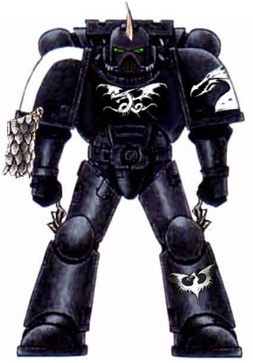
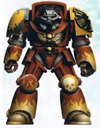
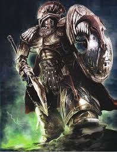

The Primarch Arthur Pendragon was sent back in time 5000 years, to an Eldar maiden world when the fell powers scattered the Primarchs, form the Emperor’s bio lab. The four fell powers had hope that one of the Eldar or a wild beast would kill him. For they knew he would hinder their plans for his brothers if they let him go unchecked. But one of the Eldar’s Farseers foresaw this and instead raised him, trained him to use his psychic talents and taught him the dangers of the warp and how to fight them. The Eldar who raised referred to him as Ra'nash as a sign of kinship showed to few if any other humans. On his 500th year the Eldar formed a task force around him to start him on the path to ruling Camelot and Albion segmentom. 50 years later he held and ruled all of Camelot alongside his Queen. He then began construction of his flag ship Avalon. 3450 years later all of Albion segmentom existed in an age of peace and prosperity under his wise and kind leadership. After 1000 of his reign his father The Emperor of Man Kind came to find and be reunited with his lost son. The Emperor then granted him command of the second Space marine legion which made from his Gene seed. He conquered many worlds for the Imperium during his 160 years in the great crusade. But then tragedy struck his brother the Primarch of the Eleventh legion fell to madness, and tried to bring about the calamitous union of the warp and reality. Arthur, The Emperor, 3 of his brothers, there legions along with several titan legions, and countless guards men squads invaded his fallen brothers star system. After 3 weeks of nonstop fighting they finally breached his brother’s fortress. But they were too late his brother had already made a cancerous tear in the fabric of reality, requiring that either Arthur and his armies or The Emperor journey into it to psychically repair a task which would take 10000 years. Arthur volunteered for he could sense The Imperium would need the Emperor in the near future if it was to survive.
during the great crusade The Knights Of The Round Table, were lead by there Primach Arthur Pendragon they are the only chapter to still be lead by there Primarch in the 41st Millenium
Possible sucsessors
Black dragons
Fire hawks
Minotars
